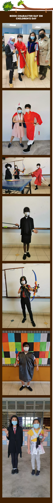
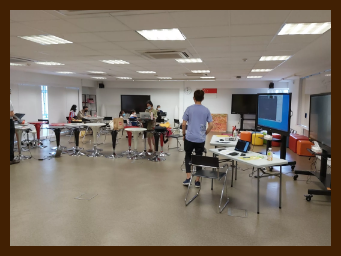

Children’s Day celebration
Children's Day is celebrated with our
P1 and P2 students at home and our P3
to P6 students in the classroom. The
theme for this year is "Appreciating
the people around me". The theme is
an extension of the Teachers' Day
theme of "Around the World". Teachers
and students are encouraged to dress
up as storybook characters from different
parts of the world.
Take a look at the photos and
see if you can identify what book
character the student or teacher
is dressed up as.

Behind the scenes in the
Webinar Presentation
Room for children's day

This is where the behind-the-
scenes live broadcast. This
shot was taken during the
"guess the teacher" Kahoots segment.